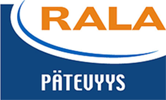

LVI-NORDIC OY
LVI-Nordic Oy on aloittanut toimintansa vuonna 2002 ja noussut vahvalla ammattitaidolla alan merkittävimpien toimijoiden joukkoon. Ammattitaitomme pohjautuu pitkään kokemukseen LVI-saneeraus-, asunto- ja liiketilaurakoinnista. LVI-Nordic on varma valinta uudis- ja saneerauskohteiden urakoitsijaksi.
Asiakkaanamme on ollut mm. kuvassa näkyvä Espoon Niittyhuippu, joka on 90 metrin korkeudellaan Espoon korkein asuinkerrostalo. Yhteensä 200 asuntoa sisältävä Niittyhuippu oli yksi yrityksemme suurimmista projekteista. Lopputuloksena syntyi huolellisesti toteutettu KVV-järjestelmä, josta saavat nauttia lukuisat Niittykummun asukkaat.
Asentajien kattavalla perehdytyksellä vaikutamme positiivisesti työmaan toimintaan ja turvallisuuteen. Avointa tiedonvälitystä pidämme ensiarvoisen tärkeänä: pidämme työmaadokumentoinnissa kuvat ja raportit järjestyksessä kotimaisen mobiilisovelluksen Kotopron avulla. Aktiivisella ja avoimella tiedonvälityksellä olemme onnistuneet yhdistämään työturvallisuuden, työtehokkuuden ja nopean muutosvalmiuden.
SERTIFIKAATIT

TOIMINTA JA VASTUULLISUUS
Olemme vahvasti mukana eri rakennuttajien kanssa kehittämässä ja nykyaikaistamassa LVI-alan urakointia. Osallistumme kustannus-säästöihin sekä laadun kohottamiseen tähtääviin projekteihin. Hyviä kokemuksia olemme saaneet mm. eri materiaalien kustannustehokkuus ja suunnitteluohjaukseen liittyvistä neuvotteluista. Toteutamme taloteknisiä kokonaisuuksia LVIJA- töiden osalta. Ammattilaisina osaamme arvioida eri toteutusvaihtoehtoja kustannuksien ja energiansäästöön liittyvistä näkökulmista.
Tarvikehankinnassa olemme aktiivisia ja edesautamme omalla vahvalla osaamisella tervettä kilpailua. Yhtiön luotettavuudesta ja vakavaraisuudesta kertoo AAA, RALA, Tilaajavastuu logot. Ammattitaitoisen henkilökuntamme lisäksi asiakkaitamme palvelee laaja yhteistyökumppaneiden verkosto. Henkilökunnallamme on tarjoamiimme palveluihin tarvittavat viranomaisluvat.